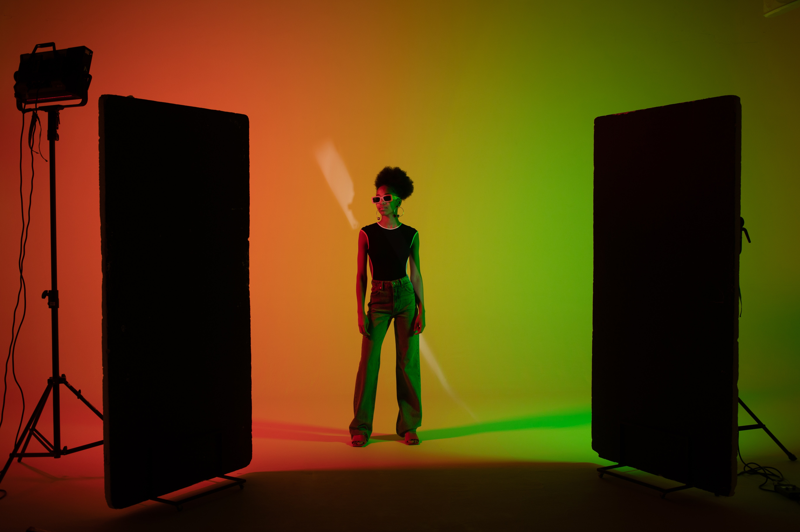

I really love photography and drawing. In photography I really like landscape and portraits. One of my favourite types of photography is what I'd label emotion, where people are dancing or crying and laughing, just where you can feel what they're feeling, especially if it has some kind of blur on it for sadder photos. So I picked some Photography portfolios that I enjoyed looking at

I've always loved art and drawing, I get it from both sides of my family. I have to say I've come a long way from stick people and stick wolves (well maybe not the wolf part) Illustrations, paintings and sketches are what I love. I really hope to learn procreate or some other digital art platform. This is why I picked the portfolios I did. Both art styles i enjoy. (they aren't the only art styles I like though)
All in all I think these portfolios are laid out nicely. :)